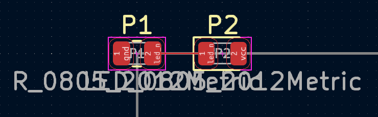

Getting Started Tutorial
This tutorial will walk you through some of the basic concepts in Circuit Painter. If you haven’t set up your environment yet, follow the instructions in the Installation section, then type the following commands into a circuitpainter-enabled Python interpreter.
Start by creating a drawing context:
from circuitpainter import CircuitPainter p = CircuitPainter()
Using the painter object, you can draw non-conductive and conductve shapes, footprints, and text onto the PCB.
First, set the layer to place the object on (tip: use print(p.layers.keys()) to show all available layers):
p.layer('F_SilkS')
Next, draw some non-conductive objects:
p.circle(0,0,3) # Draw a circle with radius 3 at the board origin p.line(0,0,10,10) # Draw a line from the board origin to (10,10) p.circle(10,10,3) # Draw a circle with raidus 3 at position (10,10)
So far, there hasn’t been any visual indication of what you’re making. To get a preview of what your design looks like, use the preview() function:
p.preview()
This will save the design to a temporary location, then open it in the KiCad editor:

It’s good for seeing the project, but be careful! The file will be deleted (along with any changes you make), as soon as you close the window. If you do want to save your board at this time, use the ‘Save As’ feature before exiting the editor!
To change the width of lines, use the width() command:
{kind=link}
You can change where and at what angle features are added, by using the translate() and rotate() features:
{kind=link}
Calling them multiple times will stack the transformations (they are calculated as a 2d transformation matrix)
{kind=link}
Saving and restoring the applied tranformation is done using push_matrix() and pop_matrix(). (Note: This is implemented as a stack, and multiple pushes can be nested):
for angle in range(0,360,30): p.push_matrix() # Save the current transformation settings p.rotate(angle) p.translate(10,10) p.rect(-5,-5,5,5) p.pop_matrix() # Restore previous transformation settings
Besides lines and rectangles, there are other basic shapes such as arc(), cirle(), and polygon().
Drawing shapes is ok but the real fun comes from adding components. To add a component, first use the library editor in KiCad to find the library and footprint name for the part you want to place. Then, you can add them to your board using the footprint() command:
{kind=link}
This placed the part, but it won’t work well as a part- it’s not wired up, so it won’t actually function! Let’s add some nets, and a resistor because that is nicer to the LED. Note that CircuitPainter doesn’t know or care about what net names you assign to what footprints, so be sure to double or triple check that your circuit is correct:
p.layer('F_Cu') p.footprint(0,0,"Resistor_SMD","R_0805_2012Metric",nets=['gnd','led_n']) p.footprint(5,0,"LED_SMD","LED_0805_2012Metric",nets=['led_n','vcc']) p.track(1,0,4,0)
{kind=link}
Note: In this example, we are manually drawing a track that just happens to line up with the centers of the two pads that we want to connect. To see a more exact way to accomplish this by looking up the positions of each pad, see the asterix example project. q Also note that we didn’t specify a net name to assign to the track. pcbnew is able to figure this out because the starting postiion of the track overlapped with the second resistor pad, so it assigned the same net to track.
One LED and resistor is cool, but not that impressive (and honestly more work than just doing it by hand). However, we can put this into a loop and combine it with the previous translation operations, to make a ring of LEDs:
for angle in range(0,360,30): p.push_matrix() p.rotate(angle) # Rotation and translation for the next resistor/led combination p.translate(5,0) p.layer('F_Cu') p.footprint(0,0,"Resistor_SMD","R_0805_2012Metric",nets=['gnd',f'led_{angle}']) p.footprint(5,0,"LED_SMD","LED_0805_2012Metric",nets=[f'led_{angle}','vcc']) p.track(1,0,4,0) p.pop_matrix()
Not bad for a few lines of code!
To make a complete board, here is the [rest of the owl](https://knowyourmeme.com/memes/how-to-draw-an-owl):
from circuitpainter import CircuitPainter p = CircuitPainter() p.no_designators() # Don't show reference designator names on the board silkscreen p.layer('F_Cu') p.width(.2) for angle in range(0,360,36): p.push_matrix() # Save the current transformation settings p.rotate(angle) p.translate(5,0) p.footprint(0,0,"Resistor_SMD","R_0805_2012Metric",nets=['gnd',f'led_{angle}']) p.footprint(5,0,"LED_SMD","LED_0805_2012Metric",nets=[f'led_{angle}','vcc']) p.track(1,0,4,0) # Connect the resistor to the LED p.track(-1,0,-2,0) # Connect the resistor to ground p.via(-2,0) p.track(6,0,7,0) # Connect the LED to vcc p.via(7,0) p.pop_matrix() # Fill the back of the board with a copper zone, and assign it to the 'vcc' net p.layer('B_Cu') p.circle_zone(0,0,14,net='vcc') # Add a battery connector to the back p.layer('B_Cu') p.footprint(0,0,"Battery","BatteryHolder_Keystone_3000_1x12mm",nets=['vcc','vcc','gnd']) # Make the board shape to a circle p.layer("Edge_Cuts") p.circle(0,0,14) p.preview()
Note that we’ve added a battery connector, vias to connect power and ground from each of the LEDs, and a circular board edge to make it look a little prettier. It’s not a bad idea to check DRC:

One you are satisfied with the design, you can either save it for further editing in KiCad with the .save() command, or go straight to a gerber with the .export_gerber() command.
For more complete examples, see the scripts in the examples directory.